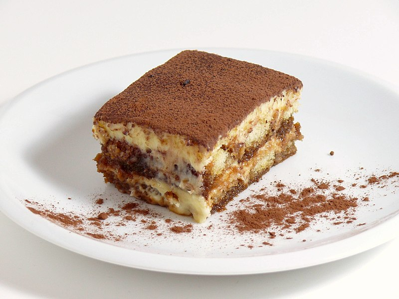

Tiramisu

**Note this recipe is from
allrecipes.com
and is used for practice purposes.
Description
Tiramisu is a classic Italian layered dessert that's easy to make at home
with coffee-soaked ladyfingers, a creamy mascarpone custard, and whipped
cream. Dust the top of the tiramisu with cocoa powder for an impressive
no-bake dessert!
Ingredients
- egg yolks
- sugar
- milk
- cream
- vanilla
- marscarpone
- coffee
- rum
- ladyfingers
- cocoa powder
Steps
-
FILLING Cook the egg yolks, sugar, and milk until
slightly thickened. Let cool slightly, then chill in the fridge for
about an hour. When the filling has fully chilled, mix in mascarpone
cheese.
-
WHIPPED CREAM Beat heavy cream with vanilla extract
until stiff peaks form.
-
LADYFINGERS Combine coffee and rum in a small bowl.
Pour mixture over ladyfingers that have been split in half lengthwise.
-
ASSEMBLE Line the bottom of a baking dish with soaked
ladyfingers. Spread half of the mascarpone mixture over the ladyfingers,
then half of the whipped cream over that. Repeat in the same order. Dust
with cocoa powder.